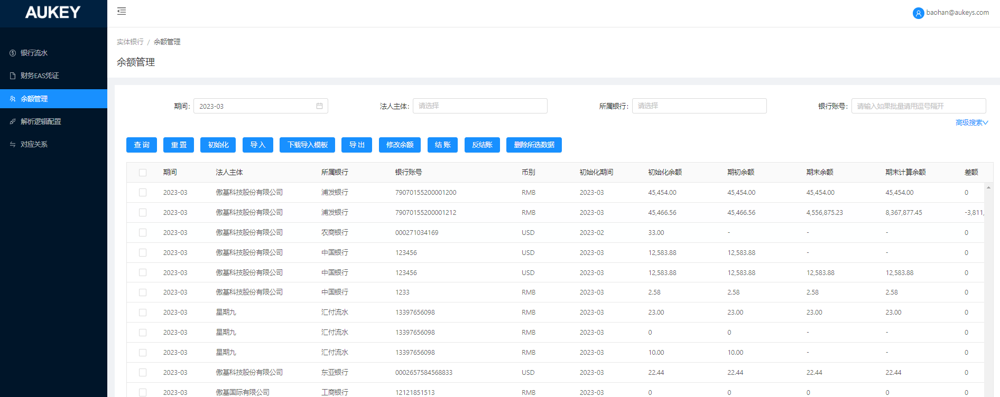

1.需求说明：
修改余额管理页面逻辑；将该页面移至【银行账户管理】模块下；
2.按钮控制说明：
2.1前端隐藏【初始化】【导入】【下载导入模板】【删除所选数据】按钮；
2.2在【账户设置】页面点击【银行账号】跳转至当前页面后，左上出现返回账户设置按钮，点击按钮按照跳转时保存的查询条件返回【账户设置】页面；——详见原型1
3.列表：
修改【状态】列及可能涉及到的相关逻辑：删除该页面较重逻辑；
3.1列表【状态】列：3.1.1删除启用禁用按钮及逻辑；
3.1.2根据【银行账户管理/账户设置】页面对应账户的【账户状态】将当前【是否结账】=“未结账”的数据值同步更新为“正常”或“销户”；
3.1.3“正常”字体颜色标绿，“销户”字体颜色标红；
3.2【结账】按钮：3.2.1结账校验条件中将【状态】=“启用”改为=“正常”，参考v6.6.2余额管理页面2.7.2；
3.2.2结账成功后，复制一份数据，将【状态】=“启用”改为=“正常”，参考v6.6.2余额管理页面2.7.3 ②；
3.3【反结账】按钮：反结账校验条件中将【状态】=“启用”改为=“正常”，参考v6.6.2余额管理页面2.8.2；
4.筛选条件：
4.1【是否结账】：将下拉多选选项改为“已结账”“未结账”，无默认值；
4.2【状态】：将下拉多选选项改为“正常”“销户”，无默认值；

返回账户设置